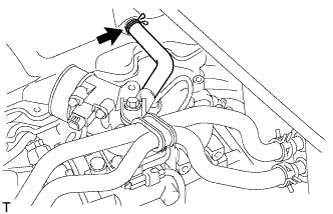

СВЕЧА НАКАЛИВАНИЯ > СНЯТИЕ |
| 1. DISCONNECT CABLE FROM NEGATIVE BATTERY TERMINAL |
| 2. REMOVE RESONATOR WITH AIR CLEANER CAP SUB-ASSEMBLY |
 |
Disconnect the sensor connector.
Detach the wire harness clamp.
Loosen the hose clamp and remove the resonator with air cleaner cap.
 |
Detach the 4 hook clamps, and then remove the air cleaner cap and resonator with air cleaner cap.
| 3. REMOVE INTAKE PIPE |
Remove the 2 bolts.
Loosen the hose clamp and remove the intake pipe.
| 4. DISCONNECT VENTILATION HOSE |
|  |
Disconnect the ventilation hose.
| 5. REMOVE NO. 1 GLOW PLUG CONNECTOR |
 |
Remove the nut, No. 2 glow plug resistor insulator and washer and disconnect the wire harness.
Remove the 4 screw grommets and 4 nuts.
Remove the No. 1 glow plug connector and No. 1 glow plug resistor insulator.
| 6. REMOVE GLOW PLUG ASSEMBLY |
 |
Using a 12 mm deep socket wrench, remove the 4 glow plugs.